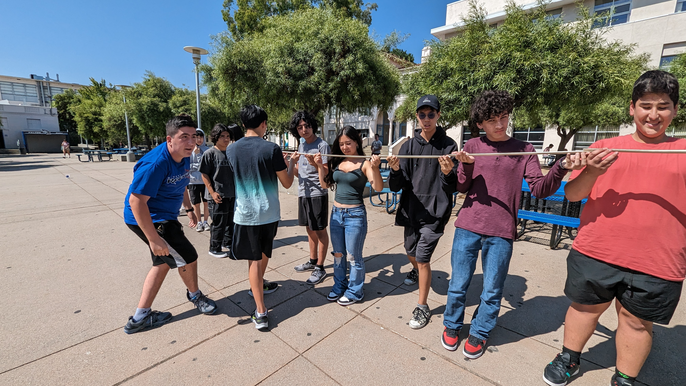
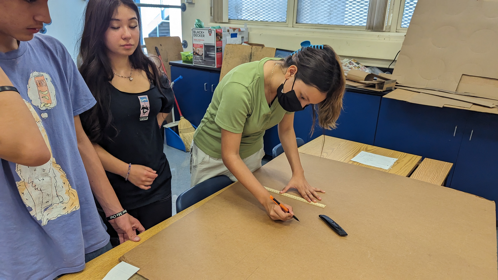
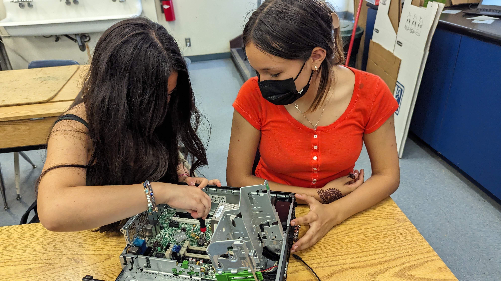
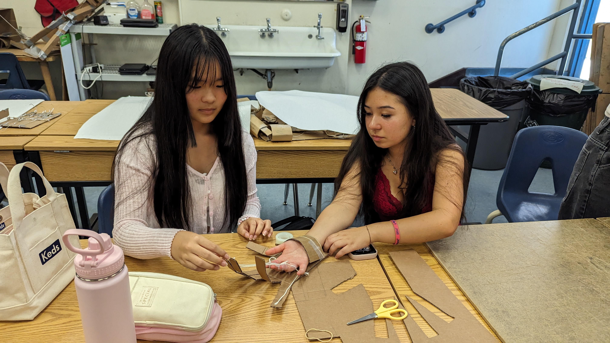
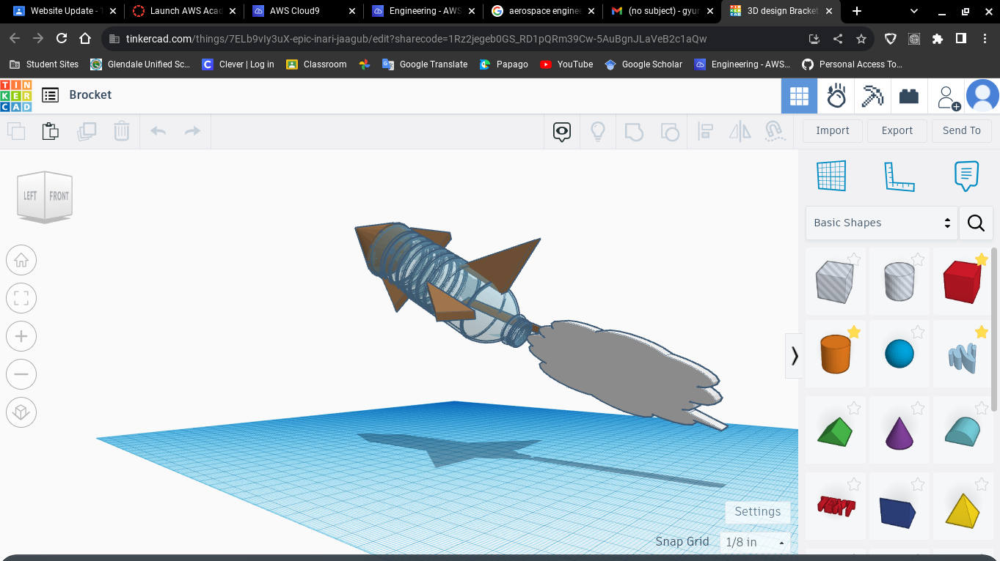

8/25/23 - This is my first journal entry!
Favorite recipe link
This week i learned the safety and etiquette for engineering class. Always take safety precautions and don't do anything stupid. Yesterday we worked with marbles and pvc pipes to try to take the marble from one end to a bucket on the other. It required good teamwork, strategy, and leadership. I really liked the challenge days, even though my team was ass. This weekend I have tennis practice on Saturday and Imma go out with my friends to the Galleria on Sunday. Prob just gonna sleep between that.

9/1/23 - This is my second journal entry
This week I learned engineering dicipline. This includes wearing safety equipment, following all safety procedures, and being responsible. The podject my group started this week was making a Rube Goldberg machine. My group is working on the designing portion. We've covered the first section so far. This week our challenge was creating a home appliance on tinkercad. It was fun even though I had no idea what I was doing.
9/25/23 - This is my fourth journal entry A lot happened this and last week. My group created a Rube Goldberg machine using a wedge, ramp, and lever. It was difficult because there were only 3 of us and often one of us was absent. We're still tweaking it right now, but we're almost ready to compete. Earlier this week we created a boat out of a single piece of paper to hold up as much weight as possible. Ours passed even though it was just a crumpled piece of paper. The way surface tension works is so interesting. We also made a letter E using other people's measurements. It taught us how important it was to use correct measurements. 
9/28/23 - This is my fifth journal entry I learned about the parts of a computer and their functions this week. Ngl ion like computer engineering. Its def not for me. This week we dissected a computer and learned about its internal portions. I learned about bytes, chips, gpus, cpus, and more parts. On Saturday I'm gonna go to my friend Sevana's birthday party!  b>10/5/23 - This is my sixth journal entry This week we learned about bioengineering. Its a type of engineering that involves elements of nature. An example is creating a type of fabric that mimics fur's insulating abilities. I designed a cardboard hand that could pick up a water bottle using cardboard, tape, and string. I cut out a template of a larger hand out of cardboard. Then I attached string from the fingers to my fingers accordingly using tape. It turned out great ngl. If i had more time, i would use rubber bands to attach the strings to my hand to make the contraption reusable. Im gonna go to homecoming tmr. Tbh ion wanna go that bad. I could have way more fun goin to montrose w my friends instead. And its not 60 bucks like? I alr gotta dress tho.  b>10/13/23 - This is my seventh journal entry This week we learned about aerospace engineering. It covers the development of aviating, defense, and spacecraft systems. The 4 forces on a flying object are thrust, drag, weight, and lift. The thing i like about this class is Jane. And the challenges, but mostly Jane. Evan completed the BOM. It includes duct tape, hot glue, cardboard, the bottle, and rubber bands. 